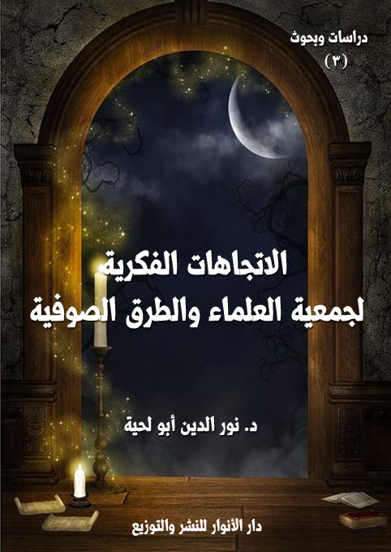
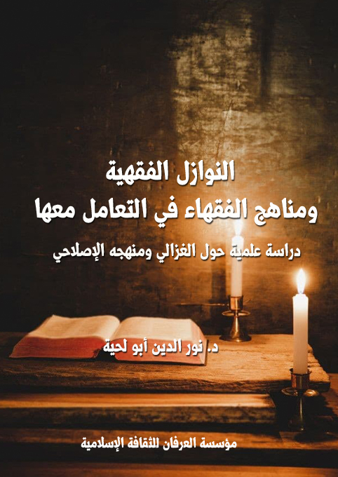

تحميل السلسلة بصيغة مصورة : PDF
تحميل السلسلة بصيغة نصية: DOCX
تحميل جميع كتب المؤلف بصيغة مصورة : PDF
تحميل جميع كتب المؤلف بصيغة نصية: DOCX
هذه سلسلة كتب علمية أكاديمية كتبت حول قضايا مختلفة، يجمعها شيء واحد، وهو محاولة التعرف على المناهج الكبرى التي تقوم عليها المدارس الإسلامية العقدية والفقهية والسجالات الحاصلة بينها.
جمعية العلماء المسلمين الجزائريين والطرق الصوفية وتاريخ العلاقة بينهما
الكتاب: جمعية العلماء المسلمين الجزائريين والطرق الصوفية وتاريخ العلاقة بينهما
المؤلف: أ.د. نور الدين أبو لحية
الناشر: دار الأنوار للنشر والتوزيع
الطبعة: الثانية، 1437 هـ
عدد الصفحات: 392
للمطالعة: هنا
لمطالعة الكتاب من تطبيق مؤلفاتي المجاني وهو أحسن وأيسر: هنا
التعريف بالكتاب
يتناول هذا الكتاب تاريخ العلاقة بين جمعية العلماء المسلمين الجزائريين، والطرق الصوفية.. وهو ليس بحثا تاريخيا مجردا، بل هو نموذج عن الصراع التاريخي الطويل بين التيارات السلفية والتيارات الصوفية.. أو هو صراع بين القراءة الحرفية الظاهرية للإسلام، والقراءة العميقة له.
وقد حاولت هذه الدراسة وما يليها من الدراسات أن ننصف الطرق الصوفية التي أوذيت كثيرا من طرف الجمعية في عهد الاستعمار الفرنسي، وأوذيت بعد الاستقلال من طرف ورثتها من أبناء الحركات الإسلامية..
الاتجاهات الفكرية لجمعية العلماء والطرق الصوفية وأثرها في التعامل بينهما
الكتاب: الاتجاهات الفكرية لجمعية العلماء والطرق الصوفية وأثرها في التعامل بينهما
المؤلف: أ.د. نور الدين أبو لحية
الناشر: دار الأنوار للنشر والتوزيع
الطبعة: الثانية، 1437 هـ
عدد الصفحات: 379
للمطالعة: هنا
لمطالعة الكتاب من تطبيق مؤلفاتي المجاني وهو أحسن وأيسر: هنا

التعريف بالكتاب
يحاول هذا الكتاب التعرف على المنابع الفكرية التي يستقي منها كل من جمعية العلماء المسلمين الجزائريين والطرق الصوفية، لاعتقادنا بأن تلك المنابع هي التفسير الصحيح، بل والوحيد لكل ما حصل من توافق أو خلاف..
جوانب الخلاف بين الجمعية والطرق الصوفية وأسبابها
الكتاب: جوانب الخلاف بين الجمعية والطرق الصوفية وأسبابها
المؤلف: أ.د. نور الدين أبو لحية
الناشر: دار الأنوار للنشر والتوزيع
الطبعة: الثانية، 1437 هـ
عدد الصفحات: 457
للمطالعة: هنا
لمطالعة الكتاب من تطبيق مؤلفاتي المجاني وهو أحسن وأيسر: هنا
التعريف بالكتاب
حاولنا في هذا الجزء البحث عن أمهات القضايا التي وقع فيها الخلاف بين الجمعية والطرق الصوفية، والتي تجلت من خلال وسائل وأساليب التعامل بينهما، وهي نفس القضايا التي يقع فيها الخلاف دائما بين التيارات السلفية والمدارس الصوفية.
الإصلاح الاجتماعي عند أبي حامد الغزالي
الكتاب: الإصلاح الاجتماعي عند أبي حامد الغزالي
المؤلف: أ.د. نور الدين أبو لحية
الناشر: دار الأنوار للنشر والتوزيع
الطبعة: الثانية، 1437 هـ
عدد الصفحات: 457
للمطالعة: هنا
لمطالعة الكتاب من تطبيق مؤلفاتي المجاني وهو أحسن وأيسر: هنا
التعريف بالكتاب
ظهر لنا الغزالي في هذه الرسالة بصورة إنسان مؤمن حزين لما أصاب الدين في عصره، وما أصاب ممثليه من العلماء، فهو لذلك يمارس دوره في جميع الميادين: في العقيدة بتنقيتها من الأهواء والبدع والانحرافات، وفي التصوف بتبيين محاسنه ومساوئه، وفي سلوكات الناس بالبحث عن جذورها العميقة، وفي الملل والنحل بالرد عليها، والكشف عن أباطيلها..
وهو أثناء ذلك قد ينقل عن صوفي أو فقيه أو فيلسوف من المعاني ما يراه مناسبا، فلذلك اتهم بالنقل، ورمي بالفلسفة، وشنع عليه بالتكرار والمبالغة.
وقد حاولنا أن نبين إمكانية الاستفادة من آراء الغزالي في إصلاح واقعنا الاجتماعي الذي يكاد يمر بنفس الظروف التي مر بها عصر الغزالي من ضعف إيماني وانهيار خلقي وتشتت في الوحدة الاجتماعية وغفلة عن القضايا الأساسية.
النوازل الفقهية ومناهج الفقهاء في التعامل معها
الكتاب: النوازل الفقهية ومناهج الفقهاء في التعامل معها
المؤلف: أ.د. نور الدين أبو لحية
الناشر: دار الأنوار للنشر والتوزيع
الطبعة: الثانية، 1437 هـ
عدد الصفحات: 145
للمطالعة: هنا
لمطالعة الكتاب من تطبيق مؤلفاتي المجاني وهو أحسن وأيسر: هنا

التعريف بالكتاب
يعتبر فقه النوازل من أهم فروع الفقه الإسلامي، لدوره الكبير في بيان أحكام الشريعة الإسلامية المرتبطة بواقع الحياة في جميع مجالاتها، فدوره هو تنزيل أحكام الشريعة على الواقع الحياتي ليصبغه بصبغتها، ويجري عليه أحكامها.
انطلاقا من هذا، حاولنا استقراء مناهج الفقهاء في الفتوى في النوازل، وقد رأينا أنه يمكن تقسيمها إلى ستة مناهج:
1 ــ المنهج الاستدلالي.
2 ــ المنهج المذهبي.
3 ــ المنهج المذاهبي.
4 ــ منهج التيسير.
5 ــ منهج التشديد.
6 ــ المنهج المقاصدي.
وقد حاولنا في هذه الدراسة أن نبين - باختصار- الخصائص التي يتميز بها كل منهج، مع الأعلام الذين تبنوه، والآليات التنفيذية المرتبطة بتحقيق المنهج في الواقع.
الإمام الحسين وقيم الدين الأصيل
الكتاب: الإمام الحسين وقيم الدين الأصيل
الوصف: دراسة علمية حول دور الإمام الحسين في الحفاظ على أصالة الدين
السلسلة: أئمة وقيم
المؤلف: د. نور الدين أبو لحية
الناشر: دار الأنوار للنشر والتوزيع
الطبعة: الأولى، 1440 هـ
عدد الصفحات: 345
للمطالعة: هنا
لمطالعة الكتاب من تطبيق مؤلفاتي المجاني وهو أحسن وأيسر: هنا
التعريف بالكتاب
هذا الكتاب محاولة لتجاوز المنهج التاريخي في البحث المرتبط بالإمام الحسين ذلك أن مكانته في الدين ـ كما تذكر الأحاديث الشريفة المتفق على صحتها ـ تتجاوز المكان والزمان؛ فهو يمثل الدين الأقوم، والسراط المستقيم، الذي تحتاج كل الأجيال للاستنارة به، والاهتداء بهديه.
وقد رأينا من خلال استقراء ما ورد عنه من روايات، أربع قيم كبرى، لا يمكن لمن يريد أن يطبق وصايا رسول الله صلى الله عليه وآله وسلم في حقه أن يتجاوزها، أو لا يهتم بها، وهي:
القيم الإيمانية: ونقصد بها ما يتعلق بحقائق العقائد، والضوابط التي تحميها من أن تقع فيما وقعت فيه معتقدات الملل والنحل من التحريف والتبديل.
القيم الروحية: ونقصد بها التوجه إلى الله بالعبودية ظاهرا وباطنا، وأسرار المعاني المرتبطة بها.
القيم الأخلاقية: ونقصد بها تلك الملكات الراسخة التي تبرز من الباطن إلى الظاهر، لتعبر عن الكمال المعنوي للإنسان وعلاقاته الإيجابية مع كل شيء.
القيم الرسالية: ونقصد بها مواجهة الطواغيت والظلمة والانحرافات بكل قوة وشجاعة وبذل وتضحية، كما نقصد بها ذلك الامتداد الذي يتجاوز به الإمام المكان والزمان لينتشر هديه في كل الأزمنة والأمكنة، لتتحقق على يديه الهداية العامة الشاملة.